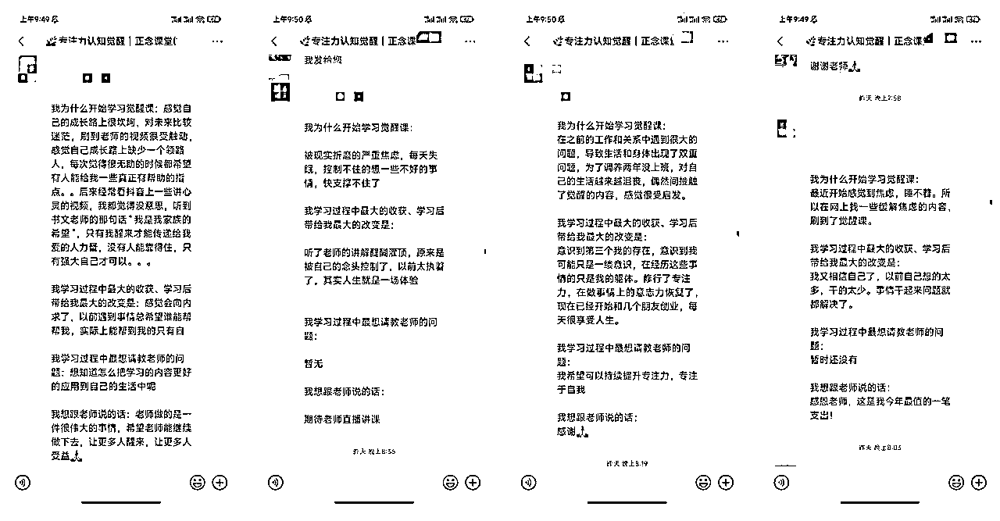
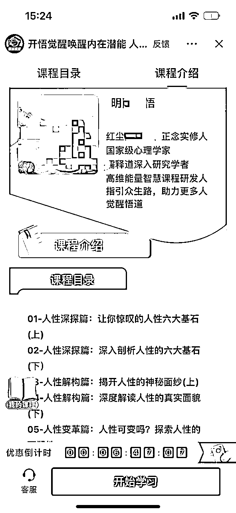

来源：https://m7vzu30d1s.feishu.cn/docx/LWLrdPj0boGVxRxYoSocdhYInFg
此文档仅供生财内部交流学习使用，侵权、抄袭、倒卖、非法传播一律追究法律责任。咨询/举报微信:yyyy081666
大家好，我是来自河南的生财圈友樾樾（yuèyuè）。从大学毕业开始，就自己做线下实体少儿培训机构，口罩后直接关门，开始入局线上教育，期间卖过心理课、职场课、管理课、运营课，算是一直在知识付费圈子。
2023年一整年的时间，用小红书流量玩法，以流量合作的形式切入几个赛道，分别给法律咨询获客、家居获客、创业粉获客，除此之外目前还有独立自营的x学业务获客。
每个赛道对接了成熟的后端产品合作后，基本都能在获客的第1周开始变现。小至几块钱的品，大至家居几w到几十w的品。
闲暇之余做了几期线下小红书流量交流沙龙，链接了更多不同行业，又从线下沙龙中又筛选了一些不同赛道的商家合作，在生财潜水太久，也是近期才开始在生财河南群里，以及星球里链接做流量和小红书的小伙伴。
下面就简单介绍一下，目前我这一年的成长收获，与生财的小伙伴一起分享下我们做项目的一些经验，希望大家能够多多交流一起进步。
我目前主要在做的是：国.学身心.灵流量、小红书商家获客，还有就是寻找更多能切入的赛道和合适的合作伙伴。（经过一年的发展，我自己培养了一支成熟的流量运营小团队，带几位我亲自培养并且筛选过的、做流量内容的小伙伴，除此之外目前每个赛道有不同的合伙人以及合作团队。）
很期待跟更多优秀的人合伙彼此赋能~ 大家最好都是在各自领域都拿到过结果的人，最好是优势互补，然后一起分工责任制。合伙人之间也要制定业绩考核，如果在合作期间不符合要求的话，最多留出未来项目制合作的空间就行，快速筛选。这点我去年真的是浪费了很多时间。创业者的时间太宝贵，当下最不缺的就是人才，而最缺的也是人才。
介绍完前面的情况，回到这个身心.灵国.学流量的主题：👇🏻我在2023年10月，正式开始《天选之人》的玩法。
切入这个赛道的契机，是因为我自己本身是长期做x学副业，不限于8字命.li、星.座星.盘1v1咨询等，还有自己对国.学、传统文化赛道的喜爱和趋势判断。
在2024步入九紫离火运之后，有20年的大运趋势。虽然离火运这个说法，大家都知道，不论真假与否，但真正想挤入这些赛道，还是需要一定门槛的。
比如先克服对这个赛道的道德评判、了解这个赛道的法律边界、再到实操流量玩法、转化以及交付细节、还要至少对其中每个领域的知识略知一二，不能不懂还去误导小白等等。
我能拿到相应的结果，来自于之前对这个行业的了解，还有对流量 转化 交付的玩法积累，这本身就是我的优势，所以也是能在这个赛道做好的原因，同时也延伸了一些相关的产品。
目前玩网创的人都在讨论国学和身心灵，这是一个绝对的非标品，利润和周边都能能延伸的变现产品，大家都说国学无论小国学还是大国学，都是缝纫机赛道做不大。
前几天跟朋友聊天还说起一件事情，她朋友在我们河南某个小县城做塔罗赛道，所有员工都有资格证，甚至卖出去的所有手串、项链、玉器都是有合格的出厂证书的，在一天做到6位数的时候，还是被当地jc叔叔问话，交了不少罚kuan。
所以想切入这些个赛道，还是要事先提前做好风险规避，或者如生财金句所言：先找个懂的人问问。而其实和国学文化 身心.灵相关的细分领域，或者有不同说法的产品，太多太多。
举几个栗子：道德经课、论语课，各种经典解读、觉醒开悟、情绪疗愈、冥想、颂钵、线下禅修营、脑科学、nlp神经语言学、吸引力法则、自我肯定语、正念、财富翻转、播种幸福、圣贤文化、种子法则，甚至疗愈音频的产品等等等等。
以上都可以和8字命li、风💧法，事、塔罗占.卜、情感挽.回，这种不相干，但实际玩法和商业模式是有很多相通之处的。这些不同的产品所涉及的专业资格还有法律法规也不同，后续我再慢慢分享。
比如我们做的《觉醒开悟课》，营收千万的GMV也不会像做命li和法，事的朋友，把GMV卖到百万的风险和心理成本大，下面这是我们目前一个月的收益截图，变现方式是纯自然流，直接挂易知课堂小程序卖课变现。

当前的课程产品价格分别是：99块、13块和68块，平台收取销售额的10%，给讲师营业额10%，其他是该项目给出去的净利润。（想尝试做的圈友需要联系我，给你单独开通最高分佣比例）产品这块儿还正在继续更新和优化。每个月都会录新课和更新最新玩法。
目前在抖音、快手、小红书、视频号，我们这个内容的流量都非常大。订单全部是自动化，在流量起来之后完全不用管，等着收钱就行，当然还可以延伸更多玩法。
我们尝试把买课的人加到私域（我的合伙人还专门研发了批量加好友的工具，需要工具的可以分享），在私域卖觉醒开悟陪伴社群。也可以直接开通橱窗卖书等等。
目前的反馈是，听完觉醒课的人，收获和评价还不错，对我们而言不仅赚钱，同时也是一个价值感满满的事情！

目前这个领域相同流量玩法的团队（不是个人）不超过10家，有部分账号只是个人运营没有团队，你如果刷到类似的账号，账号IP地址在河南、北京、河北、山东的，大部分都是我们的账号或我们带出来的账号。
还有一个同赛道的玩家做了无人直播变现，直播间里就放疗愈音频，不同赫兹的音乐，直播间流量也不错，无人直播，调试好后应该就不用管，但是我对这块儿技术不是很懂因此就没做。

目前我们自己有15个左右的手机在做这个赛道的号，通过矩阵模式起号，抖、视、快、红四平台全都发，在拿到确定性结果后。
我把跑通的流程整理成详细的sop，带身边的一些朋友一起跑，他们基本上都是短视频小白，也都很快出单了，我主要是想要有更多的账号一起去做这件事，不仅能带着他们赚钱，还能一起放大这件事。
而且让我很意外的是，有一个朋友的老婆，在家带两个宝宝，也学会了剪视频，一天发两条的情况下，在第四天突破了单日净利润1000元的收益。
她给我反馈说自己听了一下觉醒课程也挺有收获，这个宝妈的账号到现在依然还在坚持更新，比其他上班的人赚的还多，因此成就感也驱使着后来带更多的朋友一起做。
我本来想教给在家退休的老妈也玩，拿别人的成绩刺激她，她说不想整天盯着手机看，也就没下文了~~~实际上，这种傻瓜式操作，真的很适合空闲时间多的人拿来当个副业。
下面给大家分享下具体的操作，从开始做到变现，可以分为以下5个步骤：
一、注册账号
二、账号包装
三、内容制作
四、上架课程
五、开始赚钱
全套下来都是可以直接流程化操作的，最重点的部分是内容制作，不过按照方法最多1-2个小时就可以掌握。
这个不多说了，你可以直接注册新的抖音号，或者现在抖音可以使用老号创建辅助账号，这个赛道挂课变现是不需要实名认证也可以挂课的，所以不用非得用老号或者实名账号，有老号的用老号也可以。
首先在抖音搜索：“天选之人”；然后找到一个近期正在更新的账号点进去，看他的首页介绍、头像和背景图。
然后仿着修改成自己账号的就可以，其中头像和背景图可以用mj生成。昵称的话取一个跟觉醒有关的，或者“看起来像个大师”的昵称就可以，简介可以交给gpt。最好多平台进行，在抖视快红都可以注册起来。

对标搜集、内容处理、视频素材、AI配音、合成剪辑
账号有了，重点就是要发布的内容，这里我附上一份保姆级教程，下面有视频可以直接查看。
内容制作的基本步骤是：
首页搜索“天选之人”，找到点赞量过千的视频即可
因为我们自己的号，需要大量提取对标视频的文案，本来还想着买一个轻抖的企业版，有批量提取短视频文案的功能，但是轻抖企业版太贵了！
这个时候不得不提到我的好伙伴强强，因为要自用他上面开发了批量添加好友工具，最近又开发了批量提取文案的工具，有想用工具的圈友也可以找我，自己开发自己用的工具实在是太丝滑了，只为自用方便。
注意：只改写中间部分，前面第1、2句话和最后2句话，都不要改，不改的话容易被判抄袭，全改的话失去了视频的自然流量效果，参考提示词如下，gpt给出的内容可以直接使用~
微信搜索配音小程序，随便打开一个小程序就行，把前面做好的文案粘贴进去，一般这种视频的配音音色是“麦克阿瑟”或“云泽”，不同的配音小程序音色名字不一样，可以听听试试。

以下是一个视频制作的详细过程，点开查看👇🏻
（注意：剪辑教程里我忽略了添加背景音乐这个部分，实际操作的时候要记得在剪映里添加一下背景音乐，用一些纯音乐、热门BGM或者直接看对标视频用什么音乐，直接用就行，注意背景音乐不要覆盖掉人声）
这个就非常简单，去搜索“易知课堂”官网，注册讲师账号。然后绑定你的抖音号、快手号、视频号后，按照官网的操作步骤，设置好提现账户，添加课程，就可以。
（ 为方便圈友下手实操，可以直接从这里进快速入驻链接： https://author.yizhiknow.com/login/register?up_agent_id=53922 告知商务是樾樾老师来的，我会给你安排好一切。）
这一步是最简单的，过程中不懂的直接问易知课堂的客服就好，实在还是不会的，你可以列出你的问题来找我。
以上步骤都操作完成后，就可以开始挂课，上面有说过：易知课堂挂课变现是不需要账号实名认证的，这一点对做矩阵放大非常友好，而一个赛道想做更高的变现成绩就一定得做矩阵，一定要能复制。下面是具体的挂课操作，很简单。
在抖音搜索框搜索“易知课堂”，点进易知课堂小程序。（搜不到小程序入口的多搜几次，搜“易知课堂小程序入口”，有时候会有bug搜不到）
进入小程序后，点击个人中心，如果第四步注册易知课堂和绑定课堂你操作完成的话，那么你的个人中心会出现“我的讲师”的入口。没有“我的讲师”的，需要重新回到易知课堂，绑定课程。
进入“我的讲师”，点击“分销课程”，配置好挂载货架页面，然后点击挂载课程，下图以99元课程为例。点进去挂载课程后，可以看到课程的详细页面，点击右上角三个点“...”，会出现下方的“拍抖音”入口。
点击“拍抖音”，就可以选择你制作好的视频，然后进入到正常的发抖音界面了，不同的是把易知课堂小程序带上了。然后添加话题标签，比如可以看到我经常用的：觉醒开悟、认知觉醒、认知提升等等话题，也可以写一下标题，然后直接发布即可。操作熟练的情况下，一个人的一条视频从剪辑到制作，10分钟就可以搞定一条挂课作品。
作品发布完，注意过几分钟后，用抖加加热检查一下是否能投的出去，不用真投，主打一个只用自然流！能加热就是过审了，不能加热的会给出原因，隐藏或删掉这条视频，再重新制作就可以。不能用的内容，根据提示再改文案或者换素材。
增加出单量，作品发布后，除了等着躺单，还可以增加一个小动作，就是在评论区写一个置顶评论。如下图👇🏻，因为可能很多刷到这种视频走不动的人，他从没这么操作过，不知道怎么买课，所以要给出引导和提醒，这个提醒我们测试过了，不会被抖音限制。
具体操作：把买课入口截图，添加到你的抖音表情包，然后在你的作品下方评论，选中这个表情包，再加一句话，然后把这个评论置顶🔝就好了！
这样的小动作会大大增加出单量，有的人很细致的按照这个操作，出单量明显增加，而有的人操作不细致，缺点儿这、少点儿那的，收益自然不如把每一个细节都做到位的人。
其实在我看来赚钱就只需要做对3件事情：
第一：从0-1快速跑通一个项目变现
第二：不断复制变现动作
第三：持续不断的坚持
做项目要像做股票交易一样，在合适的时间买入一只股票（要不要做、什么时机做）在合适的时间把它卖出（怎么做、怎么继续做），提前做好判断，然后不断的在执行过程中调整优化。

👆🏻以上是部分收益和收益截图，太多就不一一放了，基本上每个人都能在一周内有收入，主要还是用心和执行力。
在我看来《天选之人》短视频带觉醒课，这个赚钱玩法适合新手入场，也适合团队放大的，变现快，周期短，持续性强。对这个赛道感兴趣，现在想下手做的圈友们，也可以学习搞起来。
通过这种方法，可以利用这些流量可以做的事情太多太多，用模式复制，基本上单帐号单月变现3-5千是保底的（毫不夸大）成本只是注册个帐号，持续做出好内容发布。
我们也同时孵化了真人出镜的IP，后续可以更高客单，3天涨千粉，不过真人出镜的账号变现需要IP的积累和沉淀，目前变现还是这种小客单自然流比较快。
虽然过去1年小红书电商非常火，很多人下手做小红书电商，我也曾多次浅浅尝试，今年夏天的一个手串店也爆过单，但是对我来说，真的是没有电商头脑，因此做项目尽可能找到与自己优势相符，或者曾经赚到过钱的事情。
那为什么觉醒短视频带课现在可以做，我还会继续做下去：
做这个一定要有信仰么？不用，不搞封建迷信，不搞大众不好接受的，不擦法律边界，帮助别人提升，顺带搞钱。
基本上按照以上所有的步骤操作完，就可以做一个或多个赚钱的账号。在下面有一些新手入局常见的问题，大家上手操作的时候可以直接对照：
新号老号都可以，老号把以前的内容隐藏一下，养一养就可以发布了，如果前两条视频流量都在500以上，就是正常号，可以继续用，如果不行就用新账号。
急速养号法，新号注册好后养20分钟直接发作品，亲测对流量不会有影响。
步骤：
1、在抖音搜“国学、修行、觉醒、道系青年”等关键词，把数据不错的内容点赞+收藏。
2、回到抖音首页，正常刷抖音，刷到和国学或自己赛道不相关的内容时，全部点“不感兴趣”现在应该是“少推荐”，刷到和自己赛道相关的内容时全部点赞。
3、按照这个步骤操作10分钟左右，首页就只会推送和国学赛道有关的内容了。然后开始发布作品即可。
这个你根据入驻链接入驻后，按照易知课堂给的内部流程去操作就可以，非常简单。
（ 为方便圈友下手实操，可以直接从这里进快速入驻链接： https://author.yizhiknow.com/login/register?up_agent_id=53922 告知商务是樾樾老师来的，我会给你安排好一切。）
课程：可以在易知课堂内部的分销市场搜索：“开悟”关键字，找到开悟课选择我要分销就可以了。我们对外开放的是72%分佣比例，可以找到明阳心悟99元开悟课。
自己下手操作的圈友，可以找我来给你开通80%分佣比例。目前99元的课卖的最好。优先挂99元的课。而199元的财富课、认知课，我还会持续更新新玩法。
其他变现：千粉后开通橱窗，挂国学书籍，认知类的书籍都可以。也可以推荐能量首饰、摆件等等，一个新号5天内涨粉过千很正常。
以上就是我要分享的这个项目的全部内容~~没有藏私只有经验，全部交代在这里了！想尝试的圈友也可以自己下手实操试试。“何以生财，唯有实战！”
我本人上过班，也自己做过实体培训机构，还参与投资过一些小的项目，比如2023年年初跟人一起拿了个楼盘做家装，我主要负责营销，营销我擅长。不过最终收益不好，说多都是累，都是成长和经验。
也算是一个连续创业者，深知互联网变化的速度，快的追啊追啊追，实在是追不上。
刚来生财的时候也是经常处于焦虑之中，现在已经好多了，看帖子的时候，也不会像之前一样上头，会理性的评估一下自己更擅长什么，每个阶段要做什么，在选择项目和合伙人的时候也会再多做一些分析。
我个人觉得是，趁能赚钱的时候多赚，抓住行业上升期，因为一个行业或一个项目玩法，总会有下行的时候，用我很喜欢的一句话说就是：“晴耕雨读，静候天时”。
在流量好的时候，一个项目赚的快的时候，集中兵力，小碎步快速前进，不憋大招，储备好足够多的子弹和经验，为下一个阶段做准备。
首先：国学传统文化相关的内容我会继续做下去，除了因为行业处在上升趋势以外，我自己本身也适合这个赛道，这个赛道五行属火。
自媒体、互联网行业也是属火，我们已经在自媒体圈内的人就不说了，都已经对自媒体互联网熟悉的不能再熟悉，但实际上，自媒体、互联网这个行业在2024离火运开始后，还会有更大更大的爆发，我觉得未来还会有好多能颠覆现在行业现状的可能性~~谁知道呢，我们见证的历史还少嘛~哈哈。
身心灵、玄学、疗愈等，前言中我提到的所有相关的产品，在未来也会有很大很大的空间，因为真的大家认真感受一下就会发现：现在的人内心真的不如以前容易感到充实。短视频让人们越来越越刷越上头，越来越多的人难以真正的感受到快乐，都处在心灵空虚的状态。
就像小时候，写完作业看一小会儿电视，就已经非常开心和满足，而现在这种刷短视频的节奏，要搁以前，那就是夜夜笙歌。。。整天歌舞不停。。。纣王当年都没这么玩儿，这种情况下大家感受到心灵满足的阈值也越来越高。
所以在未来这种趋势中，去做一些填补大家内心空虚的内容，传播一下正能量，是很有市场的，也很有价值。有想一起在这个赛道和周边赛道深耕的朋友，欢迎链接我的知识星球.号，去绿.色软件搜.索添+yyyy081666，说明行业和来意，一起生财有术。
同时：我也正在寻找未来更多项目的合作伙伴，比如我今年要用流量合作切入的减脂赛道、AI赛道、线下禅修营、出海等。还有更多高客单的项目可以合作的，都欢迎链接，也期待更多玩流量的创业高手一起合作组局搞💰~
最后：感谢@凡灵逸尘 大半夜两点多还在帮我改帖子，真的太强了，作为河南生财群群主，非常非常的负责和靠谱！！2024祝大家都一路发发发，祝生财越办越好！